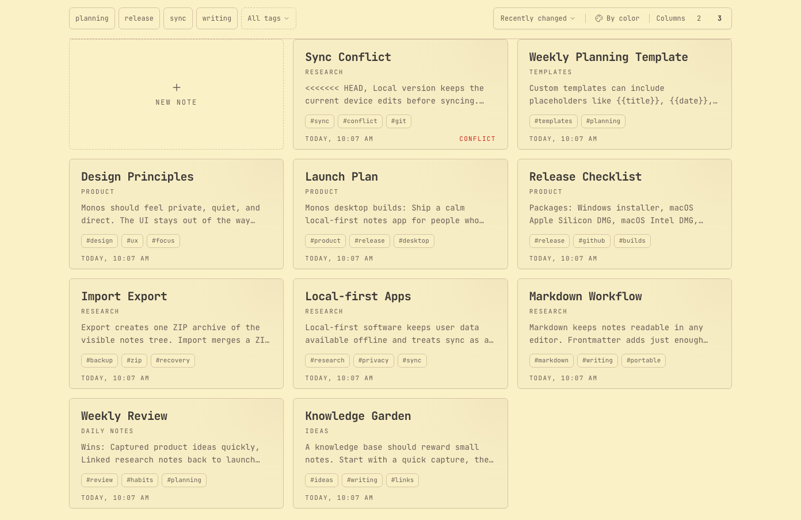
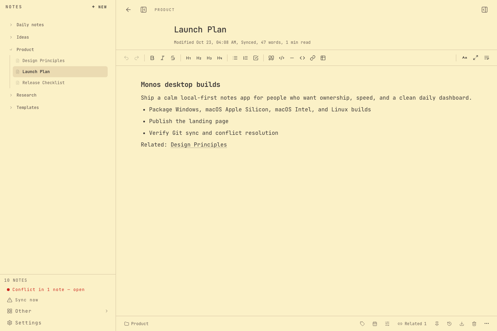
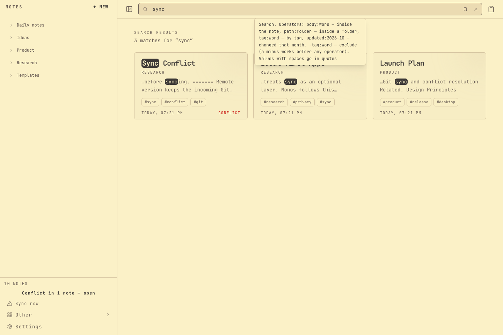
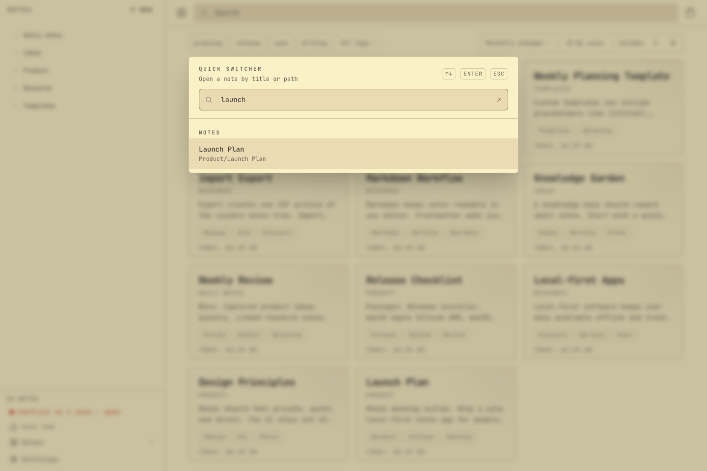
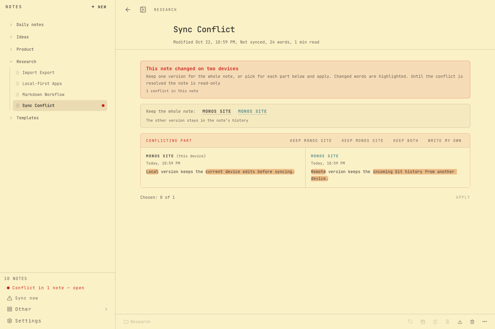
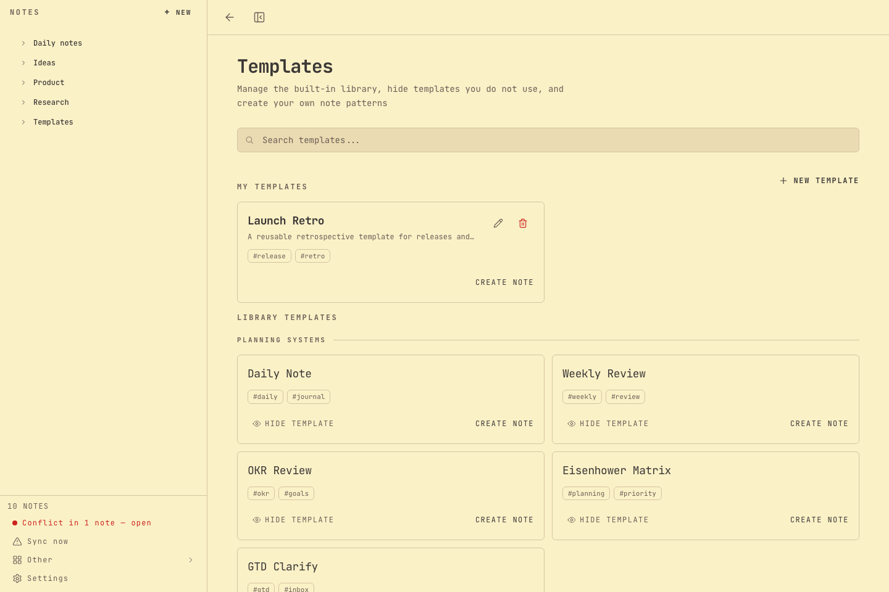
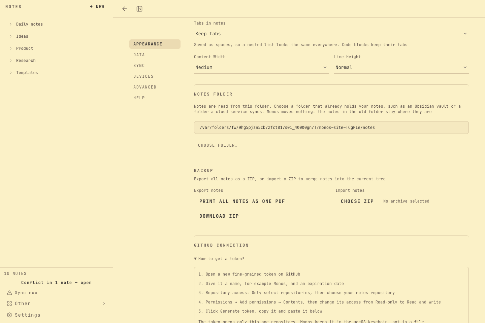
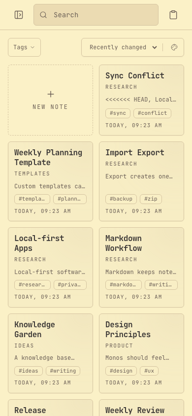

A calm notes app that does not trap your knowledge.
Monos keeps every note as a plain Markdown file on your own computer. Link notes, search across them, and keep your place on a board that stays out of the way. Git sync is there when you want history, and it is never required.
Free and MIT-licensed. Builds for macOS, Windows, and Linux. The macOS and Windows builds are not notarized or code-signed yet, so the first launch needs one extra confirmation.

Your notes are plain files.
Each note is a Markdown file in a folder on your computer. Open it in any editor, keep it under version control, or copy the whole folder somewhere else. Monos reads the same file you would.
- The file is the only copy. The search index is a cache, and it can be rebuilt at any time.
- Attachments stay with your notes. Images and files go to an _attachments folder beside them.
- Everything can leave. Export a ZIP backup, or print the whole folder as one PDF.
---
title: Reading list
tags: [books, 2026]
category: Personal
---
# Reading list
- [x] The Pragmatic Programmer
- [ ] Thinking, Fast and Slow, see [[Ideas]]Write in one place, and link as you go.
A rich editor with Markdown underneath. Link another note with double brackets, and the note you link to lists the link back as a backlink. The outline shows the headings of the open note, and it folds away on desktop when you want the full width.

Find a note by what you remember.
Search titles, tags, and note bodies from the header. Open any note by its title with Cmd or Ctrl and O, and narrow the list with filters such as tag: and path:.



When two copies disagree, you choose.
Git sync is optional. If the same note changes on two devices, Monos shows both versions and asks which one to keep. Deleted notes wait in the trash until you restore them, and an archive can be merged into your notes without overwriting what is already there.
Templates for the notes you write again and again.
Start from a built-in template, hide the ones you never use, or save your own. Placeholders such as {{title}} and {{date}} are filled in when you create the note.

Light or dark, English or Russian, and a layout for narrow windows.
Six color palettes come in light and dark variants. Both languages are complete, with no fallback between them. On a narrow window the board becomes a compact list of cards that you can still search and create notes from.


What you get, and where it lives.
- Platforms
- macOS on Apple Silicon and Intel, Windows, and Linux as an AppImage or a .deb package.
- Where notes live
- A notes folder plus a rebuildable index, both inside your operating system's application data folder.
- Git sync
- Optional. It uses a repository you choose, and it never touches the Monos source code.
- Languages
- English and Russian.
- License
- MIT. Read the source, report a problem, or build it yourself.